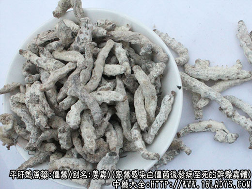

本品为常用中药。始载《神农本草经》，列为中品。
别名：姜虫、僵虫、白僵蚕、天虫。
来源：为蚕蛾科昆虫家蚕感染白僵菌后发病至死的干燥虫体。有自然感菌和人工引菌两种。
产地：主产于浙江、江苏、四川等省，其他各养蚕地区有亦生产。
性状鉴别：本品类圆柱形，多弯曲皱缩，长约2～5厘米，直径4～7毫米。表面灰白色并被有白色粉霜。头、足及节均显著可辨，头类圆形，黄褐色，足8对略突起，分生腹部两侧，全体有13个环节。质坚硬而脆，易折断，断面外围灰白色，内部黑褐色，大部分有光泽，放大镜下观察，可见有光泽的部分，是由4个或数个褐色胶状圆圈组成。气酵腐样，味微咸。
以色白，条大肥壮，断面有光泽者为佳。
主要成分：含脂肪，蛋白质、此蛋白质有刺激肾上腺皮质作用。另含草酸钙等。
药理作用：祛风热，止痉搐，其作用为：解热、抗惊厥，并有祛痰作用。
炮制：麸炒用。
性味：辛、咸、平。
归经：入肺、肝经。
功能：镇惊，祛风，化痰，散结。
主治：中风抽搐，惊痫，头痛，风痰，瘰疬，咽喉肿痛症。
临床应用：
（1）用于熄风止痉，配全蝎、蜈蚣等治破伤风、小儿急、慢惊风，也可配钩藤、珍珠粉等，方如蚕珠定惊汤（小儿适用）。
（2）用于清散风热，治头面部和口腔疾患而偏于热者，咽喉肿痛，尤其对喉痹（咽喉炎）、喉风（咽部化脓性感染），表现有咽喉肿痛，声音嘶哑者，可用本品清热消炎去肿而开音，又可在清咽利膈方剂基础上加僵蚕。
（4）用于治疗乳房炎、流行性腮腺炎、疖疮痈肿、急慢性淋巴腺炎等，常与清热解毒药如连翘、板蓝根、黄苓等配用。
用量：3～9g。
处方举例：
僵蚕定惊汤：僵蚕3g，珍珠末0.9g（冲），钩藤4.5g，白芍4.5g，丹参4.5g，羌活2.1g，鸡血藤4.5g，熟枣仁3g，水煎服。
僵蚕饮：僵蚕3g，天竺黄6g，桑寄生6g，半夏4.5g，菖蒲2.4g，钩藤4.5g，天南星2.4g，当归2.1g，水煎服。
附：僵蛹
本品为以蚕蛹为基物，经白僵菌发酵而制成，作为白僵蚕的代用品。僵蛹的主要成分为蚕蛹油（内含多种不饱和脂肪酸）、几丁质的降解物（与蛇蜕、蝉蜕所含者类似）。
其药理作用主要是：
（1）抗惊厥。能对抗小白鼠由硝酸士的宁引起的惊厥，其作用于僵蚕相同；
（2）抗肿瘤。对小白鼠肉瘤增生有抑制作用（但常使小白鼠体重下降）；
（3）祛痰；
（4）降胆固醇，对高胆固醇血症有降胆固醇作用。
临床主要用于：
①治乙型脑炎，取其有解痉作用，以僵蛹粉配全蝎、蜈蚣、天麻（即止痉散），对高热抽搐患者，有降温止抽作用，效果与僵蚕基本相同。
②治气管炎，能减轻咳嗽，使痰液变稀而易于咯出。
副作用：偶有口干咽燥、恶心、食欲减退。
用量3～9g。